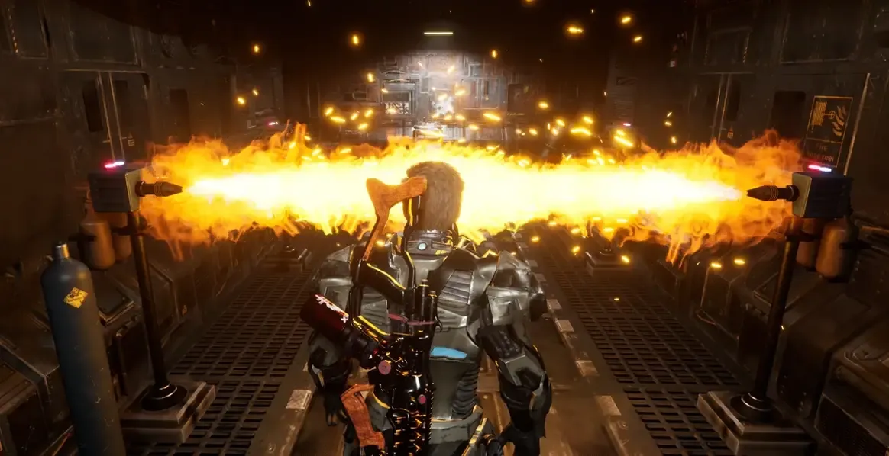
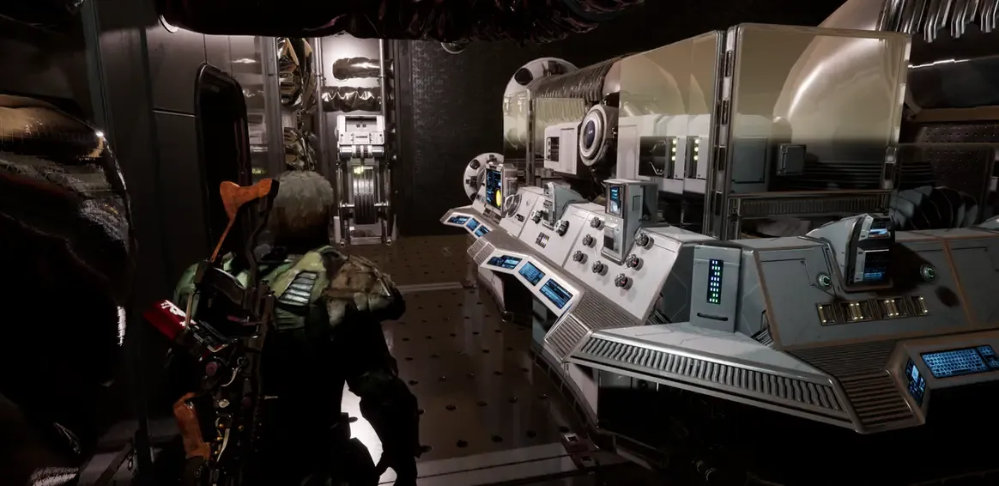

Project Overview
Breaker's World is a third-person shooter inspired by the pacing and structure of Mass Effect 1. I joined the team in a technical design role to help build narrative sequences, polish gameplay transitions, and support key systems late in development. The team was around 10–15 people.
My work focused on implementing cutscenes, scripting interactions, building worldspace UI, and integrating audio with adaptive systems. This required fast iteration with limited tools and assets, and rapid skill-up in Unreal Sequencer.
Cutscenes & Narrative Sequences
I built a wide range of in-engine cutscenes using Unreal Sequencer, including:
- Story-driven moments
- NPC interactions
- Level transitions
- Marketing videos for promotional use
This work included:
- Trigger placement
- Dialogue timing
- Camera setup and blending
- Animation syncing
- Visual callouts / staging
- Integrating SFX and music cues
- Delivering clean, reusable sequences under tight production timelines
Assets were limited, so camera work, timing, and staging had to carry the emotional weight of narrative beats.


Worldspace UI – 3D Level Selector
I built an in-world level selector using worldspace UI to keep the game immersive. This included:
- Scripting navigation and level loading
- Setting up UI interactions in 3D space
- Implementing VFX to support feedback
- Ensuring everything worked smoothly in real-time gameplay
Audio Implementation
I handled technical audio integration across:
- SFX placement
- Adaptive music systems
- State/transition triggers
- Blend behavior during cutscenes and gameplay
I worked directly with the composer to ensure their music functioned as intended in-engine, helping shape transitions, layering, and timing.
Audio felt significantly more dynamic and connected to player actions after the implementation pass.
Production Constraints
This project came with meaningful challenges:
- Limited tools
- No dedicated technical designer initially
- Tight deadlines
- Real-time implementation requirements
- Limited assets for cutscenes (staging had to do heavy lifting)
- I had to learn Unreal Sequencer immediately and produce usable work within days
These constraints shaped the approach: fast iteration, flexible solutions, and clean handoffs to other departments.
Impact
The work I contributed helped improve:
- Narrative clarity through polished cutscenes
- Player experience via clean level transitions
- Audio responsiveness, thanks to adaptive systems
- Visual readability of UI and feedback
- Overall production efficiency with reusable sequencing setups
Internal feedback noted stronger polish and better flow between gameplay and story moments.
What I Learned
- Building cinematic sequences quickly in Unreal Sequencer
- Structuring cutscenes for gameplay integration, not just cinematics
- Collaborating closely with composers and audio teams
- Creating immersive worldspace UI
- Solving problems with limited assets through staging and timing
- Technical design workflows for real-time narrative delivery